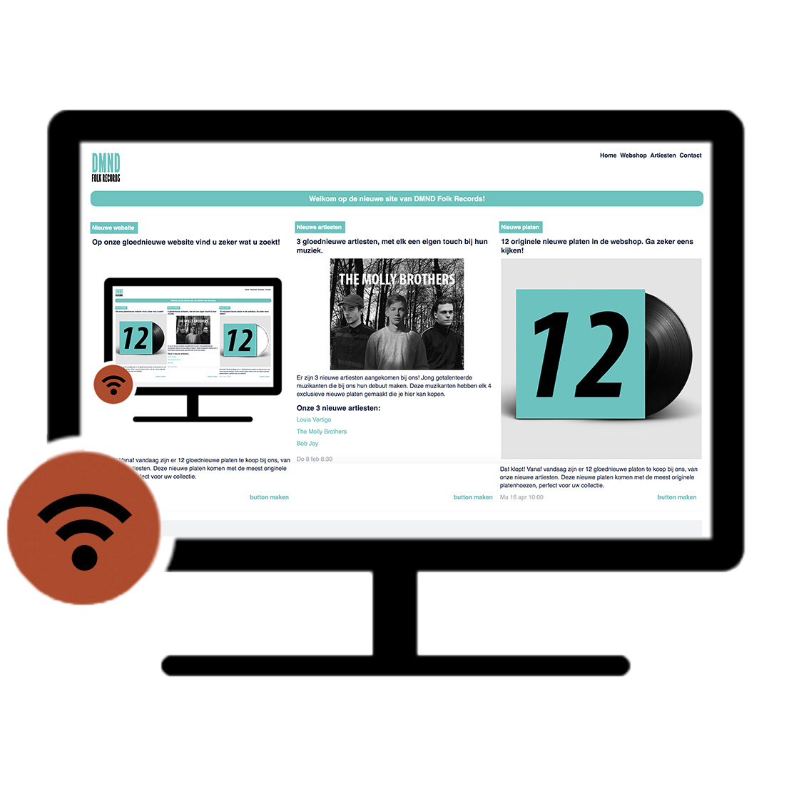
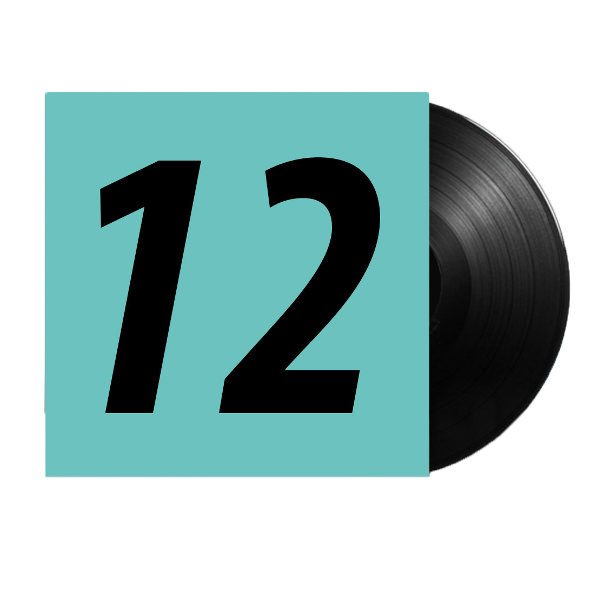
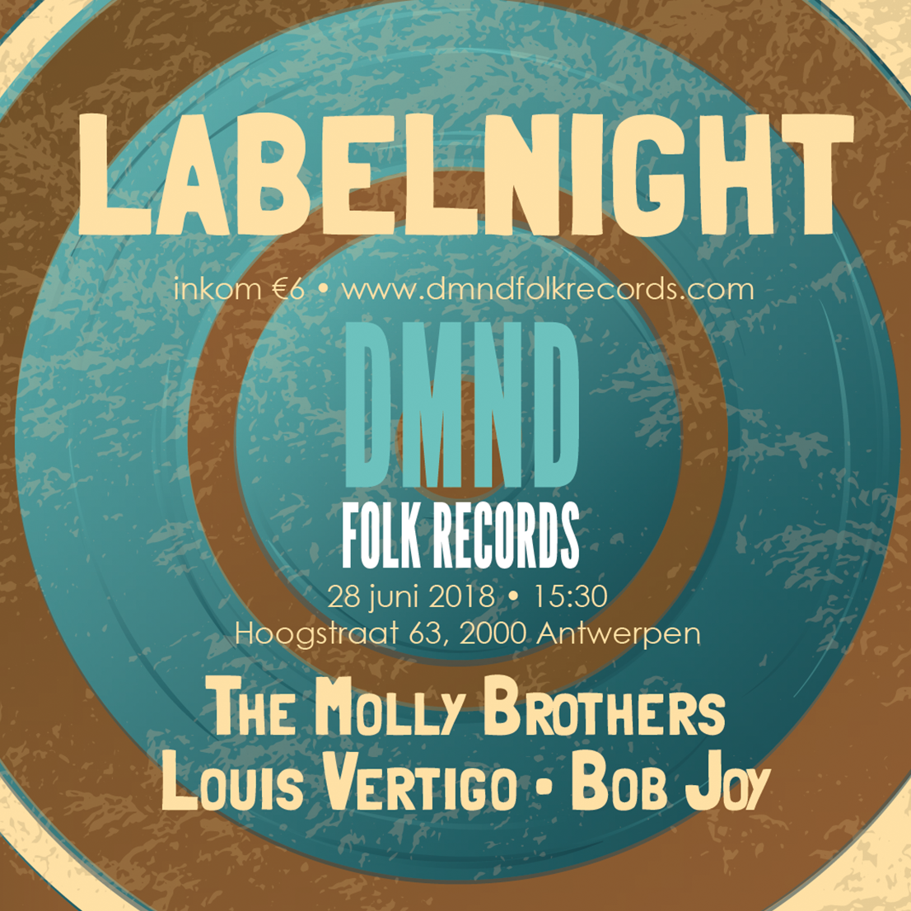

Nieuwe website
Op onze gloednieuwe website vind u zeker wat u zoekt!

Welkom op onze website. Hier kan u steeds op de hoogte blijven van al onze nieuwtjes. Onze artiesten en kan u hier ook bekijken. Eveneens een plaat kopen voor uw platencollectie, doet u in de webshop.
Ma 7 mei 9:46
Nieuwe artiesten
3 gloednieuwe artiesten, met elk een eigen touch bij hun muziek.
Er zijn 3 nieuwe artiesten aangekomen bij ons! Jong getalenteerde muzikanten die bij ons hun debuut maken. Deze muzikanten hebben elk 4 exclusieve nieuwe platen gemaakt die je hier kan kopen.
Onze 3 nieuwe artiesten:
Louis Vertigo
The Molly Brothers
Bob Joy
Artiesten
Do 8 feb 8:30
Nieuwe platen
12 originele nieuwe platen in de webshop. Ga zeker eens kijken!

Dat klopt! Vanaf vandaag zijn er 12 gloednieuwe platen te koop bij ons, van onze nieuwe artiesten. Deze nieuwe platen komen met de meest originele platenhoezen, perfect voor uw collectie.
Webshop
Ma 16 apr 10:00
Labelnight
Kom jij ook?

Dat klopt! Vanaf vandaag zijn er 12 gloednieuwe platen te koop bij ons, van onze nieuwe artiesten. Deze nieuwe platen komen met de meest originele platenhoezen, perfect voor uw collectie.
Webshop
Ma 16 apr 10:00
About us
Waarom DMND?

Waarom DMND? Een diamant is een edesteen die zeer speciaal is. Het komt ook niet veel voor in de omgeving (buiten in een juwelier natuurlijk). DMND folk records kan je dus vergelijken met een diamant, het is speciaal omdat het het eerste platenlabel is dat moderne nieuwe indiefolk zal produceren in België, het zal je nergens anders vinden dan bij hun en een diamant krijg je niet stuk. DMND folk records is niet iets dat zomaar zal verdwijnen. We zijn namelijk ook actief op allerlei sociale media waar ze verschillende filmpjes en quotes plaatsen. Een diamant straalt klasse uit, straalt licht uit naar alle richtingen wat uitbeeld wat we namelijk willen bereiken met ons platenlabel. Een diamant is luxe. Onze platen die we uitbrengen zullen dan ook luxe uitstralen. Een diamant zijn vorm is abstract, waardoor er mogelijkheden zijn om allerlei reclame te produceren in de toekomst.
Contact
Do 22 maa 15:34